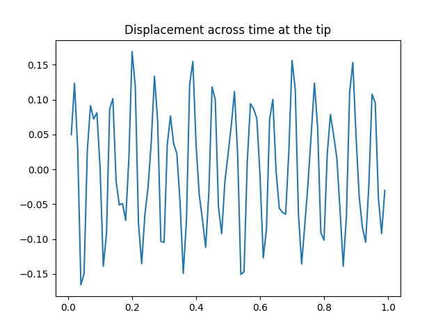

Note
Click here to download the full example code
A full PyMAPDL example#
Let’s see a full PyMAPDL example!
We will reuse some of the code we used to plot the section of a NACA airfoil. With this section we will create a simple and straight wing where we will apply some constrains and loads.
The idea is you can have an idea on how to use PyMAPDL together with other Python libraries for your own purposes (TFG? TFM? PhD?)
Setting up the environment#
First, let’s do some imports
from matplotlib import pyplot as plt
import numpy as np
from ansys.mapdl.core import launch_mapdl
and let’s launch PyMAPDL.
mapdl = launch_mapdl()
mapdl.prep7()
*** MAPDL - ENGINEERING ANALYSIS SYSTEM RELEASE 22.2 ***
Ansys Mechanical Enterprise
00000000 VERSION=LINUX x64 09:55:43 SEP 28, 2022 CP= 3.674
***** MAPDL ANALYSIS DEFINITION (PREP7) *****
Geometry definition#
In the previous part of the talk we showed how to use some Python functions to plot a NACA airfoil. Here we will reuse those functions to generate the same section inside PyMAPDL.
# Helper functions
def camber_line(x, m, p, c):
return np.where(
(x >= 0) & (x <= (c * p)),
m * (x / np.power(p, 2)) * (2.0 * p - (x / c)),
m * ((c - x) / np.power(1 - p, 2)) * (1.0 + (x / c) - 2.0 * p),
)
def dyc_over_dx(x, m, p, c):
return np.where(
(x >= 0) & (x <= (c * p)),
((2.0 * m) / np.power(p, 2)) * (p - x / c),
((2.0 * m) / np.power(1 - p, 2)) * (p - x / c),
)
def thickness(x, t, c):
term1 = 0.2969 * (np.sqrt(x / c))
term2 = -0.1260 * (x / c)
term3 = -0.3516 * np.power(x / c, 2)
term4 = 0.2843 * np.power(x / c, 3)
term5 = -0.1015 * np.power(x / c, 4)
return 5 * t * c * (term1 + term2 + term3 + term4 + term5)
def naca4(x, m, p, t, c=1):
dyc_dx = dyc_over_dx(x, m, p, c)
th = np.arctan(dyc_dx)
yt = thickness(x, t, c)
yc = camber_line(x, m, p, c)
# We are tuning a bit the output of this function to facilitate later processing.
x = x - yt * np.sin(th)
x = np.concatenate((x, x + yt * np.sin(th)), axis=0)
y = yc + yt * np.cos(th)
y = np.concatenate((y, yc - yt * np.cos(th)), axis=0)
return x, y
NACA Parameters for naca2412
Generating NACA points for the section.
Generating keypoints#
Checking results
mapdl.kplot()
Generate lines from the points#
Because the helper functions give us two points per x-coordinate, we need to join those points in two times:
Closing the section
MERGE COINCIDENT NODES WITHIN TOLERANCE OF 0.50000E-01
MERGE IDENTICAL MATERIALS WITHIN TOLERANCE OF 0.50000E-01
MERGE IDENTICAL ELEMENT TYPES
MERGE IDENTICAL REAL CONSTANT SETS WITHIN TOLERANCE OF 0.50000E-01
MERGE IDENTICAL SECTION ID SET WITHIN TOLERANCE OF 0.50000E-01
MERGE IDENTICAL ELEMENTS
MERGE IDENTICAL COUPLED DOF SETS
MERGE IDENTICAL CONSTRAINT EQUATIONS WITHIN TOLERANCE OF 0.50000E-01
MERGE COINCIDENT KEYPOINTS WITHIN TOLERANCE OF 0.50000E-01
*** WARNING *** CP = 3.843 TIME= 09:55:44
Keypoints 1 and 2 cannot be merged because:
(1) One or both of them belong to lines.
(2) The distance between them ( 3.146864964E-02) exceeds the
tolerance ( 3.146864964E-07).
*** WARNING *** CP = 3.843 TIME= 09:55:44
Keypoints 1 and 3 cannot be merged because:
(1) One or both of them belong to lines.
(2) The distance between them ( 5.248710857E-02) exceeds the
tolerance ( 2.241384605E-07).
*** WARNING *** CP = 3.843 TIME= 09:55:44
Keypoints 4 and 5 cannot be merged because:
(1) One or both of them belong to lines.
(2) The distance between them ( 2.121503862E-02) exceeds the
tolerance ( 2.121503862E-07).
*** WARNING *** CP = 3.843 TIME= 09:55:44
Keypoints 4 and 6 cannot be merged because:
(1) One or both of them belong to lines.
(2) The distance between them ( 4.223893985E-02) exceeds the
tolerance ( 2.103681832E-07).
*** WARNING *** CP = 3.843 TIME= 09:55:44
Keypoints 54 and 55 cannot be merged because:
(1) One or both of them belong to lines.
(2) The distance between them ( 2.063299177E-02) exceeds the
tolerance ( 2.063299177E-07).
*** WARNING *** CP = 3.843 TIME= 09:55:44
Keypoints 54 and 56 cannot be merged because:
(1) One or both of them belong to lines.
(2) The distance between them ( 4.115008769E-02) exceeds the
tolerance ( 2.05256279E-07).
*** WARNING *** CP = 3.843 TIME= 09:55:44
Keypoints 7 and 8 cannot be merged because:
(1) One or both of them belong to lines.
(2) The distance between them ( 2.086321658E-02) exceeds the
tolerance ( 2.086321658E-07).
*** WARNING *** CP = 3.843 TIME= 09:55:44
Keypoints 7 and 9 cannot be merged because:
(1) One or both of them belong to lines.
(2) The distance between them ( 4.167705446E-02) exceeds the
tolerance ( 2.081774221E-07).
*** WARNING *** CP = 3.843 TIME= 09:55:44
Keypoints 57 and 58 cannot be merged because:
(1) One or both of them belong to lines.
(2) The distance between them ( 2.043941462E-02) exceeds the
tolerance ( 2.043941462E-07).
*** WARNING *** CP = 3.843 TIME= 09:55:44
Keypoints 57 and 59 cannot be merged because:
(1) One or both of them belong to lines.
(2) The distance between them ( 4.086043642E-02) exceeds the
tolerance ( 2.042261826E-07).
*** WARNING *** CP = 3.843 TIME= 09:55:44
Keypoints 10 and 11 cannot be merged because:
(1) One or both of them belong to lines.
(2) The distance between them ( 2.076424706E-02) exceeds the
tolerance ( 2.076424706E-07).
*** WARNING *** CP = 3.843 TIME= 09:55:44
Keypoints 10 and 12 cannot be merged because:
(1) One or both of them belong to lines.
(2) The distance between them ( 4.151084944E-02) exceeds the
tolerance ( 2.074861222E-07).
*** WARNING *** CP = 3.843 TIME= 09:55:44
Keypoints 60 and 61 cannot be merged because:
(1) One or both of them belong to lines.
(2) The distance between them ( 2.04095237E-02) exceeds the
tolerance ( 2.04095237E-07).
*** WARNING *** CP = 3.843 TIME= 09:55:44
Keypoints 60 and 62 cannot be merged because:
(1) One or both of them belong to lines.
(2) The distance between them ( 4.081723023E-02) exceeds the
tolerance ( 2.040858385E-07).
*** WARNING *** CP = 3.843 TIME= 09:55:44
Keypoints 13 and 14 cannot be merged because:
(1) One or both of them belong to lines.
(2) The distance between them ( 2.072979806E-02) exceeds the
tolerance ( 2.072979806E-07).
*** WARNING *** CP = 3.843 TIME= 09:55:44
Keypoints 13 and 15 cannot be merged because:
(1) One or both of them belong to lines.
(2) The distance between them ( 4.145299864E-02) exceeds the
tolerance ( 2.072447958E-07).
*** WARNING *** CP = 3.843 TIME= 09:55:44
Keypoints 63 and 64 cannot be merged because:
(1) One or both of them belong to lines.
(2) The distance between them ( 2.040996261E-02) exceeds the
tolerance ( 2.041185603E-07).
*** WARNING *** CP = 3.844 TIME= 09:55:44
Keypoints 63 and 65 cannot be merged because:
(1) One or both of them belong to lines.
(2) The distance between them ( 4.082165033E-02) exceeds the
tolerance ( 2.041394947E-07).
*** WARNING *** CP = 3.844 TIME= 09:55:44
Keypoints 16 and 17 cannot be merged because:
(1) One or both of them belong to lines.
(2) The distance between them ( 2.071880202E-02) exceeds the
tolerance ( 2.071880202E-07).
*** WARNING *** CP = 3.844 TIME= 09:55:44
Keypoints 16 and 18 cannot be merged because:
(1) One or both of them belong to lines.
(2) The distance between them ( 4.14355417E-02) exceeds the
tolerance ( 2.071764713E-07).
************************************************************************
The number of ERROR and WARNING messages exceeds 20.
Additional messages suppressed. See ( /file.err ) for suppressed
messages.
************************************************************************
KEYPOINT 1 USED FOR KEYPOINT(S) 51
Let’s check the results
mapdl.lplot()
Create section area#
Let’s create an area from those lines:
mapdl.lsel("all")
mapdl.al("all")
1
Create volume from extruding the area#
We are going to use the command mapdl.vdrag to create a volume by dragging
an area along a line.
help(mapdl.vdrag)
Help on method vdrag in module ansys.mapdl.core._commands.preproc.volumes:
vdrag(na1='', na2='', na3='', na4='', na5='', na6='', nlp1='', nlp2='', nlp3='', nlp4='', nlp5='', nlp6='', **kwargs) -> str method of ansys.mapdl.core.mapdl_grpc.MapdlGrpc instance
Generate volumes by dragging an area pattern along a path.
APDL Command: VDRAG
Parameters
----------
na1, na2, na3, . . . , na6
List of areas in the pattern to be dragged (6 maximum if
using keyboard entry). If NA1 = ALL, all selected areas
will be swept along the path. A component name may also
be substituted for NA1.
nlp1, nlp2, nlp3, . . . , nlp6
List of lines defining the path along which the pattern is
to be dragged (6 maximum if using keyboard entry). Must
be a continuous set of lines. To be continuous, adjacent
lines must share the connecting keypoint (the end keypoint
of one line must also be first keypoint of the next line).
Returns
-------
str
MAPDL command output.
Notes
-----
Generates volumes (and their corresponding keypoints, lines,
and areas) by sweeping a given area pattern along a
characteristic drag path. If the drag path consists of
multiple lines, the drag direction is determined by the
sequence in which the path lines are input (NLP1, NLP2, etc.).
If the drag path is a single line (NLP1), the drag direction
is from the keypoint on the drag line that is closest to the
first keypoint of the given area pattern to the other end of
the drag line.
The magnitude of the vector between the keypoints of the given
pattern and the first path keypoint remains constant for all
generated keypoint patterns and the path keypoints. The
direction of the vector relative to the path slope also
remains constant so that patterns may be swept around curves.
Lines are generated with the same shapes as the given pattern
and the path lines.
Keypoint, line, area, and volume numbers are automatically
assigned (beginning with the lowest available values
[NUMSTR]). Adjacent lines use a common keypoint, adjacent
areas use a common line, and adjacent volumes use a common
area. For best results, the entities to be dragged should be
orthogonal to the start of the drag path. Drag operations
that produce an error message may create some of the desired
entities prior to terminating.
If element attributes have been associated with the input area
via the AATT command, the opposite area generated by the VDRAG
operation will also have those attributes (i.e., the element
attributes from the input area are copied to the opposite
area). Note that only the area opposite the input area will
have the same attributes as the input area; the areas adjacent
to the input area will not.
If the input areas are meshed or belong to a meshed volume,
the area(s) can be extruded to a 3-D mesh. Note that the NDIV
argument of the ESIZE command should be set before extruding
the meshed areas. Alternatively, mesh divisions can be
specified directly on the drag line(s) (LESIZE). See the
Modeling and Meshing Guide for more information.
You can use the VDRAG command to generate 3-D interface
element meshes for elements INTER194 and INTER195. When
generating interface element meshes using VDRAG, you must
specify the line divisions to generate one interface element
directly on the drag line using the LESIZE command. The
source area to be extruded becomes the bottom surface of the
interface element. Interface elements must be extruded in what
will become the element's local x direction, that is, bottom
to top.
Examples
--------
Create a square with a hole in it and drag it along an arc.
>>> anum0 = mapdl.blc4(0, 0, 1, 1)
>>> anum1 = mapdl.blc4(0.25, 0.25, 0.5, 0.5)
>>> aout = mapdl.asba(anum0, anum1)
>>> k0 = mapdl.k("", 0, 0, 0)
>>> k1 = mapdl.k("", 1, 0, 1)
>>> k2 = mapdl.k("", 1, 0, 0)
>>> l0 = mapdl.larc(k0, k1, k2, 2)
>>> output = mapdl.vdrag(aout, nlp1=l0)
>>> print(output)
DRAG AREAS
3,
ALONG LINES
9
First, let’s define the length we are going to use to drag the area along.
lenght_wing = 1.5 # [m] MAPDL is unit agnostic.
k0 = mapdl.k("", 0, 0, 0)
kz = mapdl.k("", 0, 0, lenght_wing)
ldrag = mapdl.l(k0, kz)
Create the volume
vol0 = mapdl.vdrag("all", nlp1=ldrag)
Let’s check the results
mapdl.vplot()
Finite element definition#
As you all know, finite element approaches split the domains into “finite elements” where you solve your equations in their quadrature points. Therefore, we need to define how that domain split is going to be performed, aka “choosing element type”.
# Defining element type
mapdl.et(1, "SOLID187")
1
Here we could also define other element options using the mapdl.keyopt
command.
Material definition#
Let’s define the material our wing is made off. We are going to choose steel in its simplest configuration (elastic linear material). But you could define other parameters (plasticity, fatige, viscoelasticity, etc).
# Define a material (nominal steel in SI)
mapdl.mp("EX", 1, 210e9) # Elastic moduli in Pa (kg/(m*s**2))
mapdl.mp("DENS", 1, 7800) # Density in kg/m3
mapdl.mp("NUXY", 1, 0.3) # Poisson's Ratio
MATERIAL 1 NUXY = 0.3000000
Mesh Generation#
Let’s finally split the domain:
maximum_element_size = 1 / 10
mapdl.esize(maximum_element_size)
mapdl.vmesh("all") # Mesh
GENERATE NODES AND ELEMENTS IN ALL SELECTED VOLUMES
Sharp angle warning:
triangle facet defined at line 199 forms an angle of 1.4 degrees
with facet at line 197
Sharp angle warning:
triangle facet defined at line 199 forms an angle of 1.4 degrees
with facet at line 197
Sharp angle warning:
triangle facet defined at line 199 forms an angle of 1.4 degrees
with facet at line 197
Sharp angle warning:
triangle facet defined at line 201 forms an angle of 1.4 degrees
with facet at line 197
Sharp angle warning:
triangle facet defined at line 201 forms an angle of 1.4 degrees
with facet at line 199
Sharp angle warning:
triangle facet defined at area 51 forms an angle of 1.4 degrees
with facet at area 50
Sharp angle warning:
triangle facet defined at area 51 forms an angle of 1.4 degrees
with facet at area 50
Sharp angle warning:
triangle facet defined at area 51 forms an angle of 1.4 degrees
with facet at area 50
Sharp angle warning:
triangle facet defined at area 51 forms an angle of 1.4 degrees
with facet at area 50
Sharp angle warning:
triangle facet defined at line 201 forms an angle of 1.4 degrees
with facet at line 199
Sharp angle warning:
triangle facets defined at line 199 form an angle of 1.4 degrees
etc... (see error file)
*** WARNING *** CP = 5.634 TIME= 09:55:47
68 angles less than 2.5 degrees found in triangle facets of volume 1,
with smallest angle = 1.4 degrees. Poor element quality or mesh
failure may result. A smaller element size specification may give
better results.
NUMBER OF VOLUMES MESHED = 1
MAXIMUM NODE NUMBER = 16044
MAXIMUM ELEMENT NUMBER = 8879
------------------------------------------------------------------------------
<<<<<< SHAPE TESTING SUMMARY >>>>>>
<<<<<< FOR NEW OR MODIFIED ELEMENTS >>>>>>
------------------------------------------------------------------------------
--------------------------------------
| Element count 8879 SOLID187 |
--------------------------------------
Test Number tested Warning count Error count Warn+Err %
---- ------------- ------------- ----------- ----------
Aspect Ratio 8879 77 0 0.87 %
Maximum Angle 8879 59 0 0.66 %
Jacobian Ratio 8879 0 0 0.00 %
Any 8879 107 0 1.21 %
------------------------------------------------------------------------------
*** WARNING *** CP = 5.866 TIME= 09:55:48
Shape testing revealed that 107 of the 8879 new or modified elements
violate shape warning limits. To review test results, please see the
output file or issue the CHECK command.
Let’s check the results:
mapdl.eplot()
Boundary Conditions Definition#
Let’s fix the nodes at the origin to not move.
mapdl.nsel("s", "loc", "z", 0)
mapdl.d("all", "all", 0)
SPECIFIED CONSTRAINT UX FOR SELECTED NODES 1 TO 16044 BY 1
REAL= 0.00000000 IMAG= 0.00000000
ADDITIONAL DOFS= UY UZ
Wind Excitation#
Let’s apply an excitation to our wing. However, we don’t really know what wind speed to apply, so let’s pull some online data first.
We are going to retrieve some data from NASA regarding the wind speed at Ansys Madrid office in Paseo de la Castellana.
Paseo de la Castellana Ansys office (Madrid). Yes, we love coffee.#
From: https://power.larc.nasa.gov/data-access-viewer/
import json
import pandas as pd
import requests
latitude, longitude = (40.447488, -3.691763)
parameters = ["T2M_MAX", "T2M_MIN"]
base_url = r"https://power.larc.nasa.gov/api/temporal/daily/point?parameters={parameters}&community=RE&longitude={longitude}&latitude={latitude}&start=20200101&end=20210305&format=JSON"
api_request_url = base_url.format(
longitude=longitude, latitude=latitude, parameters=",".join(parameters)
) # Another way to format f-strings!
response = requests.get(url=api_request_url, verify=True, timeout=30.00)
content = json.loads(response.content.decode("utf-8"))
df = pd.DataFrame(content["properties"]["parameter"])
df.columns = ["MAX", "MIN"] # renaming columns
df = df.set_index(
pd.to_datetime(df.index, format="%Y%m%d")
) # Formatting dataframe index as date.
Let’s see the data
df.head()
and describe it…
We see there are negative wind speed, probably because of the direction, since we are not interested in direction, only magnitude, let’s use the absolute value then.
Let’s plot it…
_ = df.plot(title="Wind speed per day")
As we can see, the most frequent maximum speeds are:
_ = df["MAX"].hist(bins=20)
As we can see, we could stablish there are two main peaks, one at 15 m/s and another at 33 m/s.
Let’s generate some random wind signal with those speeds. We are going to do a superposition of harmonics:
amplitude = [15, 33]
frequencies = (
np.array([10, 16]) * 2 * np.pi
) # Typical wind frequencies range between 2 and 20 Hz
phase = np.random.random(size=len(frequencies)) * 2 * np.pi
def wind_speed(t):
sum_ = 0
for each_amp, each_w, each_phase in zip(amplitude, frequencies, phase):
sum_ = sum_ + each_amp * np.cos(each_w * t + each_phase)
return sum_
t = np.arange(0, 1, 0.01)
plt.plot(t, wind_speed(t))
plt.show()
To apply these velocities, we are going instead to convert it to acceleration using the following equation:
where:
ais accelerationwis frequencyvis velocity
Now let’s use that in our analysis
We are going to apply a global acceleration using mapdl.acce.
help(mapdl.acel)
Help on method acel in module ansys.mapdl.core._commands.solution.inertia:
acel(acel_x='', acel_y='', acel_z='', **kwargs) method of ansys.mapdl.core.mapdl_grpc.MapdlGrpc instance
Specifies the linear acceleration of the global Cartesian reference
APDL Command: ACEL
frame for the analysis.
Parameters
----------
acel_x, acel_y, acel_z
Linear acceleration of the reference frame along global Cartesian
X, Y, and Z axes, respectively.
Notes
-----
In the absence of any other loads or supports, the acceleration of the
structure in each of the global Cartesian (X, Y, and Z) axes would be
equal in magnitude but opposite in sign to that applied in the ACEL
command. Thus, to simulate gravity (by using inertial effects),
accelerate the reference frame with an ACEL command in the direction
opposite to gravity.
You can define the acceleration for the following analyses types:
Static (ANTYPE,STATIC)
Harmonic (ANTYPE,HARMIC), full or mode-superposition method
Transient (ANTYPE,TRANS)
Substructure (ANTYPE,SUBSTR).
For all transient dynamic (ANTYPE,TRANS) analyses, accelerations are
combined with the element mass matrices to form a body force load
vector term. The element mass matrix may be formed from a mass input
constant or from a nonzero density (DENS) property, depending upon the
element type.
For analysis type ANTYPE,HARMIC, the acceleration is assumed to be the
real component with a zero imaginary component.
Units of acceleration and mass must be consistent to give a product of
force units.
The ACEL command supports tabular boundary conditions (%TABNAME_X%,
%TABNAME_Y%, and %TABNAME_Z%) for ACEL_X, ACEL_Y, and ACEL_Z input
values (``*DIM``) as a function of both time and frequency for full
transient and harmonic analyses.
Related commands for rotational effects are CMACEL, CGLOC, CGOMGA,
DCGOMG, DOMEGA, OMEGA, CMOMEGA, and CMDOMEGA.
See Analysis Tools in the Mechanical APDL Theory Reference for more
information.
This command is also valid in /PREP7.
Examples
--------
Set global y-acceleration to 9.81
>>> mapdl.acel(acel_y=9.81)
Model solution#
mapdl.slashsolu()
mapdl.allsel() # making sure all nodes and elements are selected.
mapdl.antype("TRANS")
mapdl.nsubst(carry="ON")
accelerations = acceleration(t)
for each_time, each_acceleration in zip(t[1:], accelerations):
mapdl.time(each_time)
mapdl.acel(acel_y=each_acceleration)
mapdl.solve()
Post-processing#
Let’s see what we got. Let’s print the displacements for the first step.
mapdl.post1()
mapdl.set(1, 1)
mapdl.post_processing.nodal_displacement("all")
array([[ 0.00000000e+00, 0.00000000e+00, 0.00000000e+00],
[ 0.00000000e+00, 0.00000000e+00, 0.00000000e+00],
[ 0.00000000e+00, 0.00000000e+00, 0.00000000e+00],
...,
[ 1.92155463e-05, -3.42120399e-02, -3.44327357e-04],
[ 2.83673480e-05, -1.07093361e-02, -2.83357372e-04],
[ 3.64267579e-05, -9.09858347e-03, -3.25471145e-04]])
and let’s plot them
mapdl.post_processing.plot_nodal_displacement("y")
We can follow this approach to get the results at each step
For example let’s get the maximum principal stresses and where it happens:
i = 0
max_stress_per_step = []
elem_max_stress_per_step = []
for step in mapdl.post_processing.time_values:
i += 1
mapdl.set(i)
stresses = mapdl.post_processing.element_stress("1") # First principal stresses
max_stress_per_step.append(stresses.max())
elem_max_stress_per_step.append(stresses.argmax())
max_stress_per_step = np.array(max_stress_per_step)
elem_max_stress_per_step = np.array(elem_max_stress_per_step)
elem_ = mapdl.mesh.enum[elem_max_stress_per_step[max_stress_per_step.argmax()]]
print(f"The maximum principal stress is {max_stress_per_step.max():0.2f} Pascals.")
print(f"The maximum principal stress happens at the element {elem_}.")
The maximum principal stress is 3953788001.30 Pascals.
The maximum principal stress happens at the element 8027.
Post-processing time dependent results#
Let’s now check the displacement across time for a node in the tip
We can get the nodes max and min coordenates as:
Getting the displacement at the tip
Closing session#
Thank you all for your time and attention!
mapdl.exit()
Total running time of the script: ( 1 minutes 41.985 seconds)